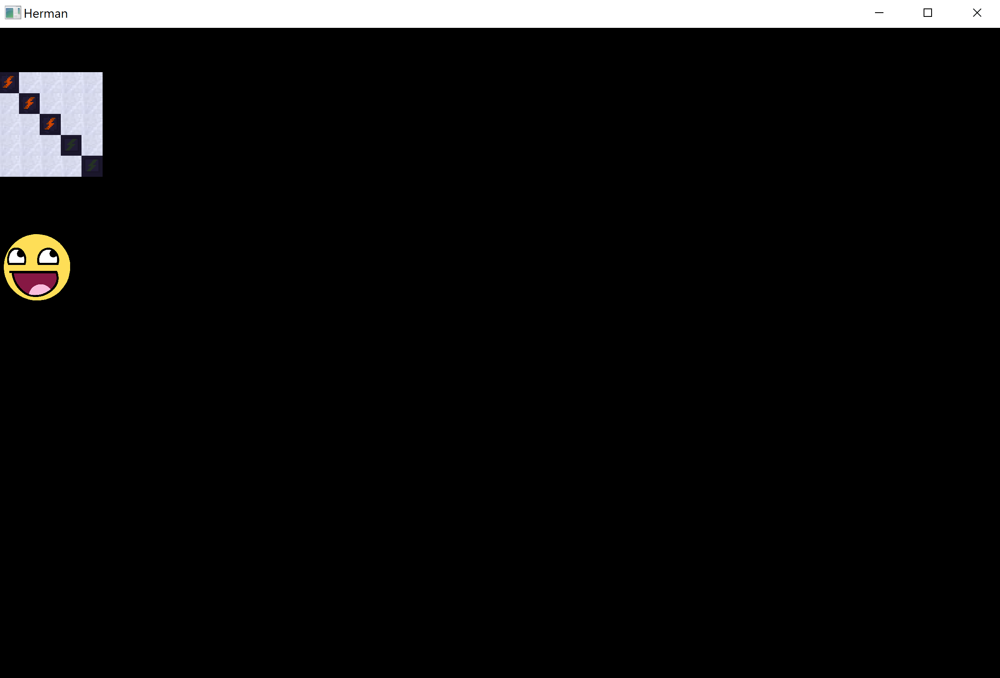

Beginning Again
A little over two years ago, Herman Electro was finally reaching the end of development. Made in an engine called LÖVE 2D, written in a language called Lua that we had learned specifically for the game, Herman Electro had almost all of the features we hoped for on release: hundreds of puzzles, unlockable content, characters, audio, saving game states, and menus. It looked like this:
Okay, maybe it wasn’t the most beautiful game in the world, and we hadn’t implemented many animations yet. But it was fun to play, it had interesting puzzles, and after a couple years of work, it was essentially done.
Except it wasn’t. Because that’s when we did something crazy: we made it again.
Going Custom
The problems with the Lua version of Herman Electro aren’t immediately visible from the video above, but look through the codebase a bit and they become apparent. Code design was sloppy, implementing new features was difficult, and we were somewhat restricted by the limitations of the LÖVE engine and Lua.
It had taken a long time to develop the Lua version, but maybe, we thought, we could quickly reproduce it in a faster language and write a cleaner codebase. Much of the development time had been spent on design, so the actual code shouldn’t take too long. And on a second time around, with a stronger idea of where we were going, we could do things right, opening up the ability to add new features more easily in the future.
So we began working on our custom engine in C++/OpenGL (with Lua scripting support). In some ways, it was a mistake that cost us valuable development time, but Herman Electro wouldn’t be half the game it is today if we hadn’t given it a second attempt. Here is what it looks like now:
We used a custom engine instead of an existing third-party engine for a few reasons. First of all, we wanted the development process to serve not just as a business venture but also as a learning experience. We also preferred using our own lightweight developer tools to the often clunky interfaces of a more fleshed-out engine. A heavy-duty engine may have provided everything we needed, but so could a custom engine in C++; with a custom engine; we wouldn’t have to download updates or wait for anything to load, and we could suit the engine to the exact needs of our game.
It’s possible we could have developed the game faster in a third-party engine, especially one with which we were familiar. But once we got the custom engine up and running, developing in it was far more enjoyable than any experience I’ve had in a third-party engine.
I’d also like to add that, while we left behind LÖVE for our custom engine, I found LÖVE to be an excellent engine overall, especially for quick prototyping. I’ve used it since in game jams or for small personal projects and have recommended it to countless people.
Getting to Work
After downloading a lightweight framework called SFML and setting up a basic C++ project and Makefile, we began with the fundamentals: a window and an infinite while-loop.
The window, managed in the Window class, was a black rectangle that would update in the while loop. It looked like this:
From there, we fleshed out the window class further. Using a tool called SOIL, the Simple OpenGL Image Library, along with some light OpenGL-related code in a Texture class, we were able to load images and make them appear on-screen. We added some sprites and accomplished the following:
The window code was handled by GLFW, and SOIL and OpenGL took care of the rest. Getting past the initial drawing of images was only possible thanks to online resources that helped us figure out the essentials of OpenGL, and fortunately, these resources are abundant. I would especially recommend this website to get basic drawing working.
GLFW also has callback functions to process keyboard, mouse, and controller input. Using Keyboard and Mouse classes, which we later connected to an InputManager class, we processed user input.
Now we had the fundamentals in place; with the ability to draw images on a screen and process user input, we could do pretty much whatever we wanted, as long as that didn’t involve playing audio or connecting to the internet.
Fleshing Out the Engine
Now we could draw tiles on the screen in any pattern we wanted. Since Herman Electro is a tile-based game, that was a huge step forward.
More complex drawing would require greater organization, especially if animations were involved. So we added two organizational layers: Processes and Screens.
Processes represent animations, or anything that occurs over a period of time. They are used to manage a variety of time-sensitive events, updating in the main update loop until they expire.
Screens represent layers of drawing in the game. Most main elements of game, including the tool inventory, the minimap, and the puzzles themselves, are separated into different screens that can use different shaders and scale independently. Screens also allow for functionality such as moving a single interface element:
Note that completing the Screen system as in the video above took some time, and at this point in engine development, we were only beginning to work on features like this.
We’d also need JSON and Lua support — JSON to handle data on tile arrangements for puzzles, and Lua to handle code for the tiles themselves and the tools and characters that could interact with them, which conveniently meant we didn’t need to compile C++ any time we changed Lua content.
For JSON, we found some helpful open-source code online to parse JSON in C++. For Lua, we used the LuaBridge library, an incredible resource that we used to create a LuaManager class. We also made C++ classes for major content elements (Tile, Animal, and Pushable), a class for the game itself (Game), and a class representing individual rooms (Room).
The Lua integration was fairly simple once we figured out LuaBridge. Here’s an example: the Tile class has a Lua entity called luaTile. When C++ needs to interact with a Tile, the Tile class references luaTile most of the time. As a result, we can change something in Lua, which is easy to work with and doesn’t require a lengthy compilation process, and the change will be reflected in C++.
At this point, the game looked pretty ugly, but we were making progress:
That bar at the bottom of the screen, while it may look fairly unassuming, is actually crucial to the game. It’s a feature called editor mode.
Editor Mode and the Evolution of Developer Tools
Two of the most essential features in Herman Electro will never be seen by most players. They are editor mode and the in-game console.
Editor mode allows the developers to drag tiles across the screen to create puzzles. We can add, remove, and rotate tiles using the mouse, and we can add tiles overlayed on top of other tiles. This functionality is crucial to the design of puzzles.
We had editor mode in the Lua version, but in C++, we also added the in-game console, an even more useful tool that allows for inventory manipulation, saving and loading of rooms, and a variety of other features.
One key takeaway from the experience of developing our custom engine was that the time put into these developer tools was easily worth the benefit. By implementing tools designed around our needs from the beginning of the C++ development process, we were able to rebuild the game and improve it much more quickly than we would have been able to otherwise.
With these tools in place, we didn’t just remake the Lua version; we improved the game enormously, from art to user interfaces to learning curve to puzzle design.
Text and Shaders
Our next task was implementing text. There were existing font rendering libraries online that would work with OpenGL, but we opted to use our own custom font renderer with a custom font just for Herman Electro.
Creating the custom font renderer didn’t take very long, since it really just required drawing letters on the screen like normal images. We also added a shader so we could have colored text or even effects like this:
GLSL shaders came in handy in a variety of other places as well, most importantly to make the game look spooky by darkening areas far away from the player:
Approaching the Finish Line
Over time, we added everything that was missing from the game: loading new maps and puzzles efficiently, audio support with a library called FMOD, and improved tile art and interfaces. It’s not too hard to tell how the game went from the videos above to the finished version; most of the infrastructure was in place from the early days of the engine. Here's a video from the middle period between the initial creation of the engine and the current state of the game:
Most indie game developers online would tell you that making your own engine is a waste of time, and that people who actually want to make a game should use Unity or Unreal. Designing an engine, they say, is worthwhile only if you want to spend years making an engine rather than a game.
Those people are probably right, especially for games that involve complex physics. But in our case, making a custom engine allowed us to enormously improve the game and build it just the way we wanted it. It gave us a second chance to invest in an idea we believed in, and it taught us a lot about graphics, C++, and game design in general.
So maybe it is stupid to make a game engine when so many free, powerful options exist. But if so, the Herman Electro rework was one of the best stupid mistakes I’ve ever made.
Thanks for reading the column! If you have any questions or comments, feel free to email us at hermanelectrogame@gmail.com. You can follow our progress and see more posts and gifs on our Twitter account, @HermanElectro.